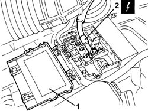
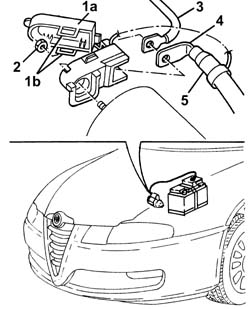
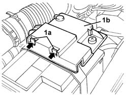
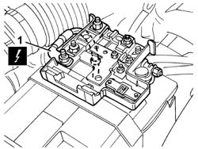

5530B26 LEAD BETWEEN BATTERY AND STARTER MOTOR - R+R
- Path
- Procedures > 55 ELECTRICAL EQUIPMENT > 5530 CURRENT GENERATOR > 5530B BATTERY AND LEADS > 5530B26 LEAD BETWEEN BATTERY AND STARTER MOTOR - R+R
- Kind
- repair procedure (removal / refitting; the operation number is the code)
- Applies to
- all engines; all production periods
- Interactive page
- https://sloeber94.github.io/elrnDB-aGt/en/#/125001642
Applies to: engines: 3.2 V6; all production periods
 Removing
Removing
 Refitting
RefittingPosition the vehicle on the ramp
1. Open the box cover on the battery.
2. Disconnect the electrical connection from the box on the battery.
Name | Connector | |
|---|---|---|
2 | Battery | See A1A BATTERY ( BATTERY POSITIVE ) |

Applies to: engines: 3.2 V6; all production periods
Release the lead between the battery and the starter motor from the fastening bands.
1. Open the cover (1a) on the starter motor releasing the retainers (1b).
2. Undo the nut.
3. Disconnect the electrical connection for the lead between the starter motor and the alternator.
4. Disconnect the electrical connection for the lead between the battery and the starter motor.
Name | Connector | |
|---|---|---|
4 | Starter' motor | See A20A STARTER' MOTOR ( RECHARGING ) |
5. Remove the cable between the battery and the starter motor.

Applies to: engines: 3.2 V6; all production periods
Refitting
RemovingPlace the lead between the battery and the starter motor back in its housing.
Connect the electrical connection for the lead between the battery and the starter motor.
Connect the electrical connection for the lead between the starter motor and the alternator.
Tighten the nut.
Close the cover on the starter motor and attach the retainers.
Fasten the lead between the battery and the starter motor using the bands.
Connect the electrical connection to the box on the battery.
Close the cover for the box on the battery.
Remove the car from the ramps.
Applies to: engines: 1.8 T.SPARK, 2.0 JTS, 1.9 JTD 16V; all production periods
Removing
RefittingPosition the vehicle on the ramp
1. Remove the cover for the box on the battery.

Applies to: engines: 1.8 T.SPARK, 2.0 JTS, 1.9 JTD 16V; all production periods
1. Disconnect the electrical connection from the box on the battery.
Name | Connector | |
|---|---|---|
1 | Battery | See A1A BATTERY ( BATTERY POSITIVE ) |

Applies to: engines: 1.8 T.SPARK, 2.0 JTS, 1.9 JTD 16V; all production periods
Release the lead between the battery and the starter motor from the retaining bands.
1. Open the cover (1a) on the starter motor, releasing the retainers (1b).
2. Undo the nut.
3. Disconnect the electrical connection for the lead between the starter motor and the alternator.
4. Disconnect the electrical connection for the lead between the battery and the starter motor.
Name | Connector | |
|---|---|---|
4 | Starter' motor | See A20A STARTER' MOTOR ( RECHARGING ) |
5. Remove the cable between the battery and the starter motor.
Applies to: engines: 1.8 T.SPARK, 2.0 JTS, 1.9 JTD 16V; all production periods
Refitting
RemovingPlace the lead between the battery and the starter motor back in its housing.
Connect the electrical connection for the lead between the battery and the starter motor.
Connect the electrical connection for the lead between the starter motor and the alternator.
Tighten the nut.
Close the cover on the starter motor and attach the retainers.
Fasten the lead between the battery and the starter motor using the bands.
Connect the electrical connection to the box on the battery.
Place the cover for the box on the battery back in its housing.
Remove the car from the ramps.